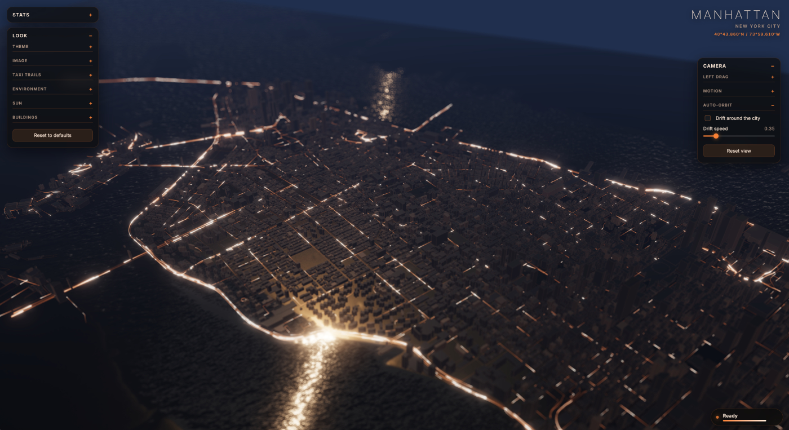
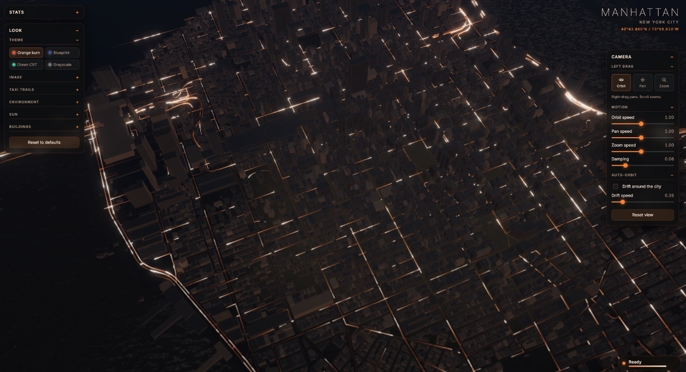
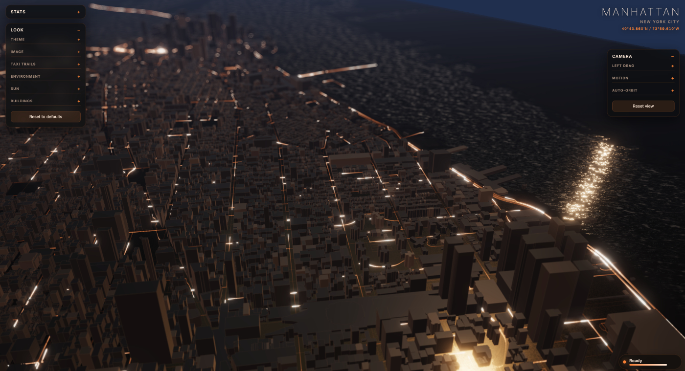
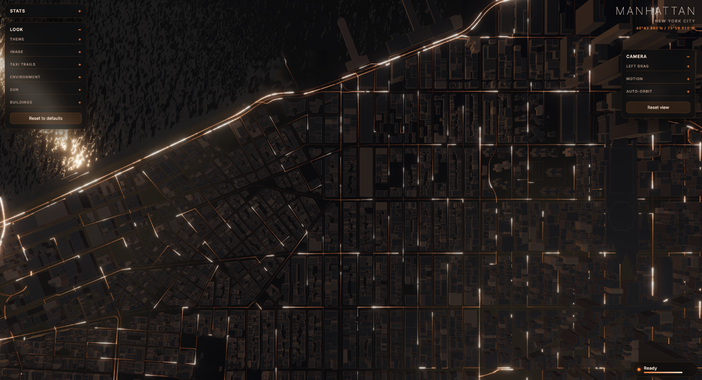

A data experiment
A real-time 3D map of Manhattan — buildings, streets, taxis, bikes, crime, collisions, and 311 complaints — all layered on a single living map.

Wide aerial view — taxi light-trails threading the street grid
What it does
Buildings and streets fetched live from OpenStreetMap's Overpass API, extruded and traced in place over Manhattan.
A fleet of cabs drives the real street graph, braking for corners and leaving glowing trails — a long-exposure photograph in real time.
Taxi origins drawn from actual 2015 NYC yellow-cab pickup records — the last year with true lat/lon — weighted by hour of day.
Rivers derived from coastline data as a signed-distance field, with animated simplex-noise swell and shoreline effects.
Citi Bike trails, 311 complaints, vehicle collisions, crime reports, and density heatmaps — all toggleable layers.
Orange burn, Blueprint, Green CRT, and Grayscale — switchable live, each re-skinning the entire scene with 100+ parameters.
Gallery

Look & Camera panels — re-tinted with the active theme

Street-level view of the taxi trail network

Top-down — streets lit by trails, water rippling at the shore
Wide aerial — the full grid glowing at night
Data Sources
Buildings and roads from OpenStreetMap via the Overpass API. Water coastlines from OSM coastline data.
2015 NYC yellow-cab pickup records from NYC Open Data — the last year with true pickup coordinates.
Citi Bike trips, 311 service requests, vehicle collisions, and NYPD crime complaints — all from NYC Open Data.
Built with Three.js and custom GLSL shaders. Bloom, depth-of-field, and ACES filmic tone mapping.
The demo loads map data on first visit. Subsequent loads read from your browser cache.
Launch Demo